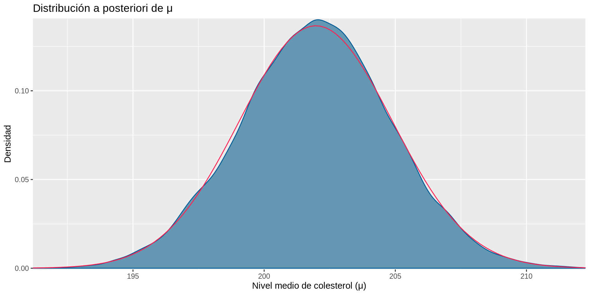
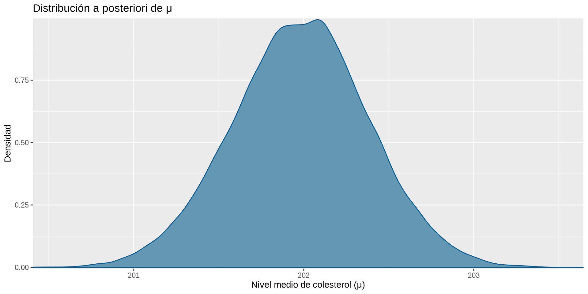

Regla de Bayes. Distribuciones a priori, funciones de verosimilitud y distribuciones a posteriori
Alfredo Sánchez Alberca
Regla de Bayes
Definición 1 (Sistema completo de sucesos) Una colección de sucesos \(A_1,A_2,\ldots,A_n\) de un mismo espacio muestral \(\Omega\) es un sistema completo si cumple las siguientes condiciones:
La unión de todos es el espacio muestral: \(A_1\cup \cdots\cup A_n =\Omega\).
Son incompatibles dos a dos: \(A_i\cap A_j = \emptyset\)\(\forall i\neq j\).
En realidad un sistema completo de sucesos es una partición del espacio muestral de acuerdo a algún atributo, como por ejemplo el sexo o el grupo sanguíneo.
Teorema de la probabilidad total
Conocer las probabilidades de un determinado suceso en cada una de las partes de un sistema completo puede ser útil para calcular su probabilidad.
Teorema 1 (Probabilidad total) Dado un sistema completo de sucesos \(A_1,\ldots,A_n\) y un suceso \(B\) de un espacio muestral \(\Omega\), la probabilidad de cualquier suceso \(B\) del espacio muestral se puede calcular mediante la fórmula
\[P(B) = \sum_{i=1}^n P(A_i\cap B) = \sum_{i=1}^n P(A_i)P(B|A_i).\]
Teorema de la probabilidad total.
Ejemplo 1 Un test diagnóstico para una enfermedad \(E\) tiene una sensibilidad del 90% y una especificidad del 95%, es decir,
Es decir, alrededor del 13.5% de los resultados del test serán positivos.
¡En el fondo se trata de una media ponderada de probabilidades!
Teorema de Bayes
Los sucesos de un sistema completo de sucesos \(A_1,\cdots,A_n\) también pueden verse como las distintas hipótesis ante un determinado hecho \(B\).
En estas condiciones resulta útil poder calcular las probabilidades a posteriori \(P(A_i|B)\) de cada una de las hipótesis.
Teorema 2 (Bayes) Dado un sistema completo de sucesos \(A_1,\ldots,A_n\) y un suceso \(B\) de un espacio muestral \(\Omega\) y otro suceso \(B\) del mismo espacio muestral, la probabilidad de cada suceso \(A_i\)\(i=1,\ldots,n\) condicionada por \(B\) puede calcularse con la siguiente fórmula
Sin información el diagnóstico sería que no tiene la enfermedad.
Sin embargo, si al realizar el test a una persona se obtiene un resultado positivo, dicha información condiciona a las hipótesis, y para decidir entre ellas es necesario calcular sus probabilidades a posteriori, es decir, \(P(E|+)\) y \(P(\overline{E}|+)\).
Probabilidades a posteriori (condicionando por el síntoma)
Con un resultado positivo en el test, la probabilidad de tener la enfermedad ha aumentado y ahora el diagnóstico sería que tiene la enfermedad.
Ejercicio 1 Se dispone de dos test \(A\) y \(B\) para diagnosticar una enfermedad con una prevalencia del 1% en la población. El test \(A\) tiene una sensibilidad del 98% y una especificidad del 80%, mientras que el test \(B\) tiene una sensibilidad del 75% y una especificidad del 99%.
¿Cuál de los dos test funcionaría mejor como test de cribado?
Si aplicamos el test de cribado a una persona y da positivo, ¿cuál es la probabilidad de que esté enferma? ¿Qué diagnosticaríamos?
Si aplicamos a una persona el test de cribado primero y luego el otro test y ambos dan positivo, ¿cuál es la probabilidad de que esté enferma? ¿Qué diagnosticaríamos?
Regla de Bayes
En terminología bayesiana, si \(H\) representa una hipótesis y \(D\) representa los datos observados, entonces el teorema de Bayes se puede expresar como la siguiente regla de actualización de la probabilidad de la hipótesis \(H\) dada la evidencia \(D\):
Probabilidad a posterioriProbabilidad a prioriVerosimilitud
En la regla de Bayes, la probabilidad \(P(D|H)\) se conoce como verosimilitud de la hipótesis \(H\) dada la evidencia \(D\).
Cuando tenemos varias hipótesis, la verosimilitud de cada una de ellas se puede comparar con la de las otras para determinar cuál es la más compatible con los datos observados.
Definición 2 (Función de verosimilitud) Dado un sistema completo de sucesos con hipótesis \(H_1, H_2, \ldots, H_n\) de un experimento aleatorio, y un suceso \(D\) que representa la evidencia observada, la función de verosimilitud es una función que asigna a cada hipótesis \(H_i\) la probabilidad de observar la evidencia \(D\) dada esa hipótesis, es decir,
\[
L(H_i|D) = P(D|H_i)
\]
Importante
Los valores de la función de verosimilitud son probabilidades condicionadas, pero la variable de la función de verosimilitud es el condicionante, es decir, la hipótesis \(H_i\), no la evidencia \(D\).
\[
L(x|D) = P(D|x)
\]
Ejemplo 3 Consideremos el ejemplo del test diagnóstico anterior, con sensibilidad del 90% y especificidad del 95%.
Dada la evidencia de que el resultado del test ha sido positivo, la función de verosimilitud de las hipótesis \(E\) y \(\overline{E}\) es
La función de verosimilitud de las dos posibles hipótesis \(E\) y \(\overline{E}\) dada la evidencia \(+\) es
En este caso, la hipótesis \(E\) es mucho más compatible con la evidencia que la hipótesis \(\overline{E}\).
Interpretación de la función de verosimilitud
La función de verosimilitud se puede interpretar como una medida de la compatibilidad de cada hipótesis con los datos observados.
Cuanto mayor sea la función de verosimilitud de una hipótesis dada la evidencia, más plausible será la hipótesis.
Es importante destacar que la función de verosimilitud no es una función de probabilidad, ya que la suma de la verosimilitud de todas las hipótesis no tiene por qué ser igual a 1.
Ejemplo 4 La siguiente tabla refleja las probabilidad a priori y la función de verosimilitud de las hipótesis \(E\) y \(\overline{E}\) dada la evidencia \(+\) en el ejemplo del test diagnóstico.
Hipótesis
Probabilidad a priori \(P(H)\)
Función de verosimilitud \(L(H|D)\)
\(E\)
0.1
0.9
\(\overline{E}\)
0.9
0.05
Probabilidad a posteriori
Si disponemos de la probabilidad a priori de cada hipótesis y de la función de verosimilitud dada la evidencia, entonces es posible calcular la probabilidad a posteriori de cada hipótesis dada la evidencia utilizando la regla de Bayes.
La probabilidad del denominador \(P(D)\) es un factor común para todas las hipótesis, por lo que podemos decir que la probabilidad a posteriori de cada hipótesis es proporcional al producto de su probabilidad a priori por su función de verosimilitud:
Ejemplo 5 En el ejemplo del test diagnóstico, dado que el test ha resultado positivo, tenemos las siguientes plausibilidades a posteriori.
Hipótesis
Probabilidad a priori \(P(H)\)
Función de verosimilitud \(L(H|D)\)
Plausibilidad a posteriori
\(E\)
0.1
\(\times\)
0.9
\(=\)
0.090
\(\overline{E}\)
0.9
\(\times\)
0.05
\(=\)
0.045
Como puede observarse, la suma de las plausibilidades a posteriori no es igual a 1, por lo que no se pueden interpretar como probabilidades. Sin embargo, sí podemos compararlas, y en este caso la hipótesis \(E\) es el doble de plausible que la hipótesis \(\overline{E}\) dada la evidencia de que el test ha resultado positivo.
¿Cómo podríamos transformar las plausibilidades a posteriori en probabilidades a posteriori?
Podemos normalizar las plausibilidades a posteriori para obtener probabilidades a posteriori, dividiendo cada una de ellas por la suma de todas las plausibilidades a posteriori.
Hipótesis
Probabilidad a priori \(P(H)\)
Función de verosimilitud \(L(H|D)\)
Plausibilidad a posteriori
Probabilidad a posteriori \(P(H|D)\)
\(E\)
0.1
\(\times\)
0.9
\(=\)
0.090
0.09/(0.09+0.045) = 0.667
\(\overline{E}\)
0.9
\(\times\)
0.05
\(=\)
0.045
0.045/(0.09+0.045) = 0.333
Simulación de la regla de Bayes
Podemos simular el procedimiento de actualización de la probabilidad de una hipótesis dada la evidencia, que realiza la regla de Bayes. Para ello necesitamos tomar muestras aleatorias de:
La distribución a priori de la hipótesis \(H\).
La distribución conjunta de la hipótesis \(H\) y la evidencia \(D\) teniendo en cuenta la función de verosimilitud \(L(H|D)\).
Muestreo de la distribución a priori
Ejercicio 2 Obtener una muestra aleatoria de tamaño \(n=10000\) de la distribución a priori de la hipótesis \(H\) con probabilidades \(P(E)=0.1\) y \(P(\overline{E})=0.9\) y representar gráficamente la distribución muestral.
Solución
library(tidyverse)df_H =tibble(hipótesis =c("E", "NoE")) # Hipótesisprior <-c(0.1, 0.9) # P(E) y P(No E)set.seed(123) # Para reproducibilidadn <-10000# Tamaño de la muestra# Muestreo de la distribución a priorimuestra_prior <-sample_n(df_H, size = n, weight = prior, replace =TRUE)# Diagrama de barras de la distribución de frecuenciasggplot(muestra_prior, aes(x = hipótesis)) +geom_bar(fill = myblue) +labs(title ="Muestra aleatoria de la distribución a priori",x ="Hipótesis", y ="Frecuencia") +theme_minimal()
Muestreo de la distribución conjunta
# Muestreo de la función de verosimilitud (resultado del test)muestra_prior <- muestra_prior |>mutate(test =ifelse(runif(n()) <ifelse(hipótesis =="E", 0.9, 0.05), "+", "-"))# Diagrama de barras de la distribución de frecuencias del testggplot(muestra_prior, aes(x = hipótesis, fill = test)) +geom_bar(position ="fill") +scale_y_continuous(labels = scales::percent) +labs(title ="Distribución de frecuencias del resultado del test",x ="Hipótesis", y ="Frecuencia relativa") +theme_minimal()
Muestreo de la distribución a posteriori
Una vez tenemos la distribución conjunta, podemos obtener una muestra de la distribución a posteriori, filtrando por la evidencia de que el resultado del test ha sido positivo.
# Filtrar casos con test positivosmuestra_posterior <- muestra_prior |>filter(test =="+")# Diagrama de barras de la distribución de frecuencias de la muestra a posterioriggplot(muestra_posterior, aes(x = hipótesis, y =after_stat(count /sum(count)))) +geom_bar(fill = myblue) +labs(title ="Muestra aleatoria de la distribución a posteriori",x ="Hipótesis", y ="Frecuencia relativa") +theme_minimal()
Como se puede observar, la distribución de frecuencias a posteriori coincide con las probabilidades a posteriori calculadas con la regla de Bayes.
Ejercicio 3 Se dispone de dos test \(A\) y \(B\) para diagnosticar una enfermedad con una prevalencia del 1% en la población. El test \(A\) tiene una sensibilidad del 98% y una especificidad del 80%, mientras que el test \(B\) tiene una sensibilidad del 75% y una especificidad del 99%.
Obtener una muestra aleatoria de tamaño 100000 de la distribución a priori de la hipótesis.
Obtener una muestra aleatoria de tamaño 100000 de la distribución conjunta de las hipótesis y el resultado del test A.
Obtener una muestra aleatoria de la distribución a posteriori de las hipótesis dada la evidencia de que el test A ha resultado positivo.
Obtener una muestra aleatoria de la distribución conjunta de las hipótesis y el resultado del test B.
Obtener una muestra aleatoria de la distribución a posteriori de las hipótesis dada la evidencia de que el test B ha resultado positivo.
Distribuciones conjugadas
Hemos visto que para obtener la distribución de probabilidad a posteriori de una hipótesis dada la evidencia, es necesario combinar la función de probabilidad a priori de la hipótesis con la función de verosimilitud dada la evidencia, utilizando la regla de Bayes.
Existen determinadas familias de distribuciones de probabilidad que, al combinarse con otras familias de distribuciones, mantienen su forma funcional. Estas familias se denominan distribuciones conjugadas y son de gran utilidad en el contexto de la inferencia bayesiana.
Las distribuciones conjugadas más comunes son:
Beta-Binomial
Beta-Geometrica
Gamma-Poisson
Gamma-Exponencial
Normal-Normal
Distribución conjugada Beta-Binomial
Si \(p\sim \mbox{Beta}(\alpha, \beta)\) sigue una distribución Beta de parámetros \(\alpha\) y \(\beta\), y \(X\sim B(n, p)\) sigue una distribución Binomial con parámetros \(n\) y \(p\), entonces la distribución a posteriori de \(p\) dado \(X=k\) es también una distribución beta,
Ejemplo 6 Supongamos que queremos estimar la proporción de fumadores en nuestra ciudad tenemos una distribución a priori de \(p\) dada por una distribución Beta con parámetros \(\alpha=2\) y \(\beta=5\), es decir, \(p\sim \mbox{Beta}(2, 5)\). Si tomamos una muestra aleatoria de \(n=30\) personas y observamos que \(k=10\) de ellas son fumadoras, entonces la distribución a posteriori de \(p\) dado \(X=30\) es
Si \(\lambda \sim \mbox{Gamma}(\alpha, \beta)\) sigue una distribución Gamma de parámetros \(\alpha\) y \(\beta\), y \(X\sim \mbox{P}(\lambda)\) sigue una distribución Poisson con parámetro \(\lambda\), entonces la distribución a posteriori de \(\lambda\) dado \(X=k\) es también una distribución Gamma,
Si se toman \(n\) muestras independientes de la misma distribución Poisson \(P(\lambda)\), entonces la distribución a posteriori de \(\lambda\) dado \(X_1=x_1,\ldots,X_n=x_n\) es también una distribución Gamma,
Ejemplo 7 Supongamos que queremos estimar la tasa de nacimientos diarios en una ciudad. Tenemos una distribución a priori de \(\lambda\) dada por una distribución Gamma con parámetros \(\alpha=2\) y \(\beta=5\), es decir, \(\lambda \sim \mbox{Gamma}(2, 5)\). Si observamos que en una muestra de 5 días se han producido \(X_1=10, X_2=8, X_3=9, X_4=11, X_5=7\) eventos, entonces la distribución a posteriori de \(\lambda\) es
Si \(\mu \sim N(\theta, \tau^2)\) sigue una distribución Normal de media \(\theta\) y varianza \(\tau^2\), y \(X\sim N(\mu, \sigma^2)\) sigue una distribución Normal con media \(\mu\) y varianza \(\sigma^2\), entonces la distribución a posteriori de \(\mu\) dado \(X=x\) es también una distribución Normal,
Si se toman \(n\) muestras independientes de la misma distribución Normal \(N(\mu, \sigma^2)\), entonces la distribución a posteriori de \(\mu\) dado \(X_1=x_1,\ldots,X_n=x_n\) es también una distribución Normal,
Ejemplo 8 Supongamos que el peso perdido con una dieta sigue una distribución normal $N(, 4) y queremos estimar el peso medio \(\mu\) perdido con la dieta. Tenemos una distribución a priori de \(\mu\) dada por una distribución Normal con media \(\theta=10\) y varianza \(\tau^2=1\), es decir, \(\mu \sim N(10, 1)\). Si tomanos una muestra aleatoria de \(n=20\) personas que han seguido la dieta y observamos que el peso medio perdido es \(\bar{x}=8\), entonces la distribución a posteriori de \(\mu\) es
Un modelo bayesiano es un modelo estadístico que incorpora la incertidumbre sobre los parámetros desconocidos a través de distribuciones de probabilidad a priori, y que utiliza la regla de Bayes para actualizar estas distribuciones a posteriori a medida que se va obteniendo nueva información a través de los datos observados.
Los modelos bayesianos puedon considerarse modelos de aprendizaje autmático puesto que aprenden distribuciones con la experiencia que se va adquiriendo a través de los datos observados.
Elementos de un modelo bayesiano
Para definir un modelo bayesiano es necesario especificar:
El espacio de las hipótesis o parámetros desconocidos.
La distribución de probabilidad a priori de las hipótesis o parámetros desconocidos que refleja la incertidumbre inicial sobre ellos antes de observar los datos.
La distribución de probabilidad de los datos observados para cada hipótesis o valor de los parámetros desconocidos, que viene dada a través de la función de verosimilitud.
Esquema de un modelo bayesiano
Distribuciones de probabilidad a priori discretas y continuas
Dependiendo de la naturaleza de las hipótesis o parámetros desconocidos, el espacio de hipótesis puede ser discreto o continuo. Esto da lugar a dos tipos de distribuciones de probabilidad a priori.
Distribuciones a priori discretas. Se utilizan cuando el espacio de hipótesis es discreto, es decir, las hipótesis o parámetros desconocidos toman un número finito o contable de valores, como por ejemplo el caso del test diagnóstico con las hipótesis \(E\) y \(\overline{E}\).
Distribuciones a priori continuas. Se utilizan cuando el espacio de hipótesis es continuo, es decir, las hipótesis o parámetros desconocidos pueden tomar cualquier valor dentro de un intervalo o región del espacio, como por ejemplo el caso de la estimación de la media o una proporción de una población.
Distribuciones de los datos observados condicionados por las hipótesis
Del mismo modo, dependiendo de la naturaleza de los datos observados, la función de verosimilitud puede modelarse mediante distribuciones de probabilidad discretas o continuas.
Distribuciones de probabilidad discretas. Se utilizan cuando los datos observados son discretos, es decir, toman un número finito o contable de valores, como por ejemplo el número de éxitos en una serie de ensayos independientes.
Distribuciones de probabilidad continuas. Se utilizan cuando los datos observados son continuos, es decir, pueden tomar cualquier valor dentro de un intervalo o región del espacio, como por ejemplo la altura o el peso de una persona.
Tipos de modelos bayesianos
Según el tipo de la distribución a priori y de la distribución de los datos utilizada para calcular la función de verosimilitud, tenemos distintos tipos de modelos bayesianos.
Taxonomía de modelos bayesianos
Modelos bayesianos más utilizados
Prior discreto + verosimilitud discreta. Las parejas más habituales son uniforme discreta con Binomial o Poisson, y priors ad hoc definidos por un experto con Multinomial o categórica. Es el caso del diagnóstico médico con hipótesis finitas.
Prior discreto + verosimilitud continua. Aparece en comparación y selección de modelos. La pareja más importante es uniforme sobre modelos con Normal o Weibull para calcular factores de Bayes. El caso spike-and-slab con Normal es la base de la selección bayesiana de variables en regresión.
Prior continuo + verosimilitud discreta. Aquí están los pares conjugados más importantes de la epidemiología: Beta-Binomial para proporciones, Dirichlet-Multinomial para categorías, Gamma-Poisson para conteos, y Beta-Geométrica para tiempo hasta el primer evento.
Prior continuo + verosimilitud continua — Es el caso más general. Los pares conjugados más importantes son Normal-Normal, Normal Inv-Gamma y Gamma-Exponencial para tasas. Todo lo demás (regresión con covariables, modelos mixtos, supervivencia) no tiene forma analítica cerrada y requiere aproximación por MCMC.
Modelo Beta - Binomial
Cuando el parámetro de interés es una proporción \(\theta\), como por ejemplo el la proporción de fumadores en una población, y los datos observados son el número de éxitos \(X\) en una serie de \(n\) ensayos independientes, como por ejemplo el número de personas fumadoras en una muestra, el modelo bayesiano más utilizado es el modelo Beta-Binomial.
Prior: \(\theta \sim \text{Beta}(\alpha, \beta)\)
Verosimilitud: \(X|\theta \sim B(n, \theta)\).
Ejercicio 4 Supongamos que queremos estimar la proporción de fumadores en nuestra ciudad. Sabemos que en varias muestras tomadas en otras ciudades similares, la proporción media estaba alrededor del 33% y que la menor y mayor proporción observadas fueron del 19% y del 48%, respectivamente.
¿Qué distribución Beta podríamos utilizar para modelizar la distribución a priori?
x <-seq(0, 1, length.out =100)y <-dbeta(x, shape1 =30, shape2 =60)df <-tibble(θ = x, densidad = y)ggplot(df, aes(x = θ, y = densidad)) +geom_line(color = myblue) +labs(title ="Distribución Beta con α=30 y β=60",x ="Proporción de fumadores (θ)", y ="Densidad") +theme_minimal()
También podemos usar el paquete bayesrules para visualizar las distribuciones más características en estadística bayesiana.
library(bayesrules)plot_beta(alpha =30, beta =60) +labs(title ="Distribución Beta con α=30 y β=60",x ="Proporción de fumadores (θ)", y ="Densidad")
Ejercicio 5 Tras realizar un nuevo sondeo en la nuestra ciudad hemos observado que en una muestra de 100 personas, 20 son fumadoras.
¿Cuál es la función de verosimilitud para un proporción de fumadores en la ciudad \(\theta\)?
Solución
Llamemos \(Y\) al número de personas fumadoras en una muestra de tamaño \(n=100\). Suponiendo que la proporción de personas fumadoras en la ciudad es \(\theta\), el número de personas fumadoras observadas en una muestra aleatoria de 100 personas sigue una distribución Binomial con parámetros \(n=100\) y \(\theta\).
x <-seq(0, 1, length.out =100)y <-dbinom(20, size =100, prob = x)# Función de verosimilitud para y = 20df <-tibble(θ = x, verosimilitud = y)ggplot(df, aes(x = θ, y = verosimilitud)) +geom_line(color = myblue, size =1.5) +labs(title ="Función de verosimilitud para y = 20",x ="Proporción de fumadores (θ)", y ="Verosimilitud") +theme_minimal()
O bien, usando el paquete bayesrules,
plot_binomial_likelihood(y =20, n =100) +labs(title ="Función de verosimilitud para y = 20",x ="Proporción de fumadores (θ)", y ="Verosimilitud")
Una vez que tenemos las distribuciones a priori y la función de verosimilitud, podemos calcular la distribución a posteriori utilizando la regla de Bayes.
Sin embargo, la constante normalizadora \(P(Y=20)\) es difícil de calcular ya que requiere acumular las probabilidades \(f(\theta)L(\theta|Y=20)\) para cualquier \(\theta\). Pero como \(\theta\) es una variable continua que puede tomar cualquier valor real entre 0 y 1, esta suma se convierte en la integral
Afortunadamente, aprovechando la distribución conjugada Beta-Binomial, sabemos que en este caso la distribución a posteriori de \(\theta\) dado \(Y=20\) es también una distribución Beta con parámetros \(\alpha=30+20=50\) y \(\beta=60+100-20=140\), es decir, \(\theta|Y=20 \sim \mbox{Beta}(50, 140)\).
plot_beta(alpha =50, beta =140) +labs(title ="Distribución a posteriori de θ dado Y=20",x ="Proporción de fumadores (θ)", y ="Densidad")
Podemos dibujar las tres distribuciones, a priori, verosimilitud y a posteriori, en la misma gráfica mediante la función plot_beta_binomial() del paquete bayesrules.
plot_beta_binomial()
Dibuja la distribución Beta a priori, la distribución Binomial de la función de verosimilitud y la distribución Beta a posteriori dado el número de éxitos observado en la muestra.
Parámetros:
alpha: Parámetro \(\alpha\) de la distribución Beta a priori.
beta: Parámetro \(\beta\) de la distribución Beta a priori.
y: Número de éxitos observados en la muestra.
n: Tamaño de la muestra.
plot_beta_binomial(alpha =30, beta =60, y =20, n =100) +labs(title ="Distribución a priori, función de verosimilitud y distribución a posteriori",x ="Proporción de fumadores (θ)", y ="Densidad / Verosimilitud")
Simulación de la distribución a posteriori
Cuando no sea posible determinar analíticamente la distribución teórica a posteriori, como por ejemplo en el caso de modelos bayesianos con distribuciones no conjugadas, entonces se puede simular la distribución a posteriori mediante técnicas de muestreo.
Las técnicas de muestreo más habituales, por orden de antigüedad, son:
Muestreo de rejilla (grid sampling)
Markov Chain Monte Carlo (MCMC)
Hamiltonian Monte Carlo (HMC)
Simulación de la distribución a posteriori mediante muestreo de rejilla
La técnica de muestreo de rejilla es la más sencilla y consiste en:
Definir una rejilla de valores posibles para la hipótesis o parámetro desconocido.
Calcular la función de verosimilitud para cada uno de estos valores.
Multiplicarla por la probabilidad a priori correspondiente a cada valor.
Normalizar el resultado para obtener una distribución a posteriori aproximada.
Ejemplo 9 En el ejemplo anterior para estimar la proporción de personas fumadoras, partiendo de la distribución a priori \(\theta \sim \mbox{Beta}(30, 60)\) y de la función de verosimilitud \(L(\theta|Y=20) = P(Y=20|\theta) = \binom{100}{20} \theta^{20} (1-\theta)^{80}\), el siguiente código simula la distribución a posteriori de \(\theta\) dado \(Y=20\) mediante muestreo de rejilla.
# Rejilla de 100 posibles valores de θ entre 0 y 1rejilla <-seq(0, 1, length.out =100)# Función de verosimilitud para cada valor de θverosimilitud <-dbinom(20, size =100, prob = rejilla)# Probabilidad a priori para cada valor de θprior <-dbeta(rejilla, shape1 =30, shape2 =60)# Plausibilidad a posteriori para cada valor de θposterior <- prior * verosimilitud# Normalizamos la plausibilidad a posteriori para obtener una distribución de probabilidaddf_posterior <-tibble(θ = rejilla, posterior = posterior /sum(posterior))# Gráfica de la distribución a posterioriggplot(df_posterior, aes(x = θ, y = posterior)) +geom_line(color = myblue, size =1.5) +labs(title ="Distribución a posteriori de θ dado Y=20 (simulación de rejilla)",x ="Proporción de fumadores (θ)", y ="Densidad") +theme_minimal()
Para ver si esta distribución simulada se parece a la distribución teórica \(Beta(50, 140)\), podemos extraer una muestra aleatoria de ella suficientemente grande y dibujar su histograma.
set.seed(123)# Muestra aleatoria de tamaño 10000muestra_posterior <-sample_n(df_posterior, size =10000, weight = posterior, replace =TRUE)# Histograma de la muestra a posterioriggplot(muestra_posterior, aes(x = θ)) +geom_histogram(aes(y =after_stat(density)), binwidth =0.01, alpha =0.7, fill = myblue, color ="white") +stat_function(fun = dbeta, args =list(50, 140), color = myred) +labs(title ="Histograma de la muestra aleatoria de la distribución a posteriori",x ="Proporción de fumadores (θ)", y ="Densidad") +theme_minimal()
Como se puede observar, el histograma de la muestra aleatoria de la distribución a posteriori simulada mediante muestreo de rejilla se ajusta bastante bien a la función de densidad de la distribución teórica \(Beta(50, 140)\).
Ejercicio 6 Partiendo de la distribución a posteriori anterior para la proporción de fumadores, \(p\sim Beta(50, 140)\), simula la distribución a posteriori si se toma otra muestra de tamaño 300 en la que aparecen 140 personas fumadoras.
Solución
# Rejilla de 100 posibles valores de θ entre 0 y 1rejilla <-seq(0, 1, length.out =100)# Función de verosimilitud para cada valor de θ con la nueva muestraverosimilitud <-dbinom(140, size =300, prob = rejilla)# Probabilidad a priori para cada valor de θ (distribución a posteriori anterior)prior <-dbeta(rejilla, shape1 =50, shape2 =140)# Plausibilidad a posteriori para cada valor de θposterior <- prior * verosimilitud# Normalización de la plausibilidad a posterioridf_posterior <-tibble(θ = rejilla, posterior = posterior /sum(posterior))set.seed(123)# Muestra aleatoria de tamaño 10000muestra_posterior <-sample_n(df_posterior, size =10000, weight = posterior, replace =TRUE)# Histograma de la muestra a posterioriggplot(muestra_posterior, aes(x = θ)) +geom_histogram(aes(y =after_stat(density)), binwidth =0.01, alpha =0.7, fill = myblue, color ="white") +stat_function(fun = dbeta, args =list(50+140, 140+300-140), color = myred) +labs(title ="Histograma de la muestra aleatoria de la distribución a posteriori",x ="Proporción de fumadores (θ)", y ="Densidad") +theme_minimal()
Modelo Gamma-Poisson
Cuando el parámetro de interés es una tasa \(\lambda\), como por ejemplo la tasa de nacimientos diarios en una ciudad, y los datos observados son el número de eventos \(X\) en un intervalo de tiempo dado, como por ejemplo el número de nacimientos en un día, el modelo bayesiano más utilizado es el modelo Gamma-Poisson.
Ejercicio 7 Supongamos que queremos estimar la incidencia de infartos diarios en España por cada millón habitantes. Sabemos que en varios países similares, la tasa media de infartos es de 5 por cada 1000 habitantes al año, y que la menor y mayor tasa observadas fueron de 2 y 10 por cada 1000 habitantes al año, respectivamente.
¿Qué distribución Gamma podríamos utilizar para modelizar la distribución a priori?
plot_gamma(shape =10, rate =2) +labs(title ="Distribución Gamma con α=2 y β=0.4",x ="Tasa de infartos (λ)", y ="Densidad")
Ejercicio 8 Tras realizar un nuevo sondeo hemos observado que en una muestra de 5 días se han producido \(X_1=10, X_2=8, X_3=9, X_4=11, X_5=7\) infartos.
¿Cuál es la función de verosimilitud para para tasa de infartos \(\lambda\)?
Solución
Llamemos \(Y\) al número de infartos diarios. Suponiendo que la tasa de infartos diarios es \(\lambda\), el número de infartos diarios puede modelizarse con una distribución de Poisson de parámetro \(\lambda\), es decir, \(Y\sim P(\lambda\)), por lo que la función de verosimilitud para una tasa de infartos \(\lambda\) dado el número de infartos observados en 5 días es
plot_poisson_likelihood(y =c(10, 8, 9, 11, 7), lambda_upper_bound =15) +labs(title ="Función de verosimilitud para la muestra de 5 días",x ="Tasa de infartos (λ)", y ="Verosimilitud")
Una vez que tenemos las distribuciones a priori y la función de verosimilitud, podemos calcular la distribución a posteriori utilizando la regla de Bayes.
De nuevo, la constante normalizadora \(P(Y=(10,8,9,11,7))\) es difícil de calcular ya que requiere acumular las probabilidades \(f(\lambda)L(\lambda|Y=(10,8,9,11,7))\) para cualquier \(\lambda\). Pero como \(\lambda\) es una variable continua que puede tomar cualquier valor real entre 0 y \(\infty\), esta suma se convierte en la integral
De nuevo, podemos ahorrarnos el cálculo de la integral aprovechando la distribución conjugada Gamma-Poisson, sabemos que en este caso la distribución a posteriori de \(\lambda\) dada la muestra \(Y_1=10, Y_2=8, Y_3=9, Y_4=11, Y_5=7\) es también una distribución Gamma con parámetros \(\alpha=10+10+8+9+11+7\) y \(\beta=2+5\), es decir, \(\lambda \sim \mbox{Gamma}(55, 7)\).
plot_gamma(shape =55, rate =7) +labs(title ="Distribución a posteriori de λ",x ="Tasa de infartos (λ)", y ="Densidad")
Podemos dibujar las tres distribuciones, a priori, verosimilitud y a posteriori, en la misma gráfica mediante la función plot_gamma_poisson() del paquete bayesrules.
plot_gamma_poisson()
Dibuja la distribución Gamma a priori, la distribución Poisson de la función de verosimilitud y la distribución Gamma a posteriori dada una muestra de conteos.
Parámetros:
shape: Parámetro \(\alpha\) de la distribución Gamma a priori.
rate: Parámetro \(\beta\) de la distribución Gamma a priori.
sum_y: Suma de los conteos observados en la muestra.
n: Tamaño de la muestra.
plot_gamma_poisson(shape =10, rate =2, sum_y =45, n =5) +labs(title ="Distribución a priori, función de verosimilitud y distribución a posteriori",x ="Tasa de infartos (λ)", y ="Densidad / Verosimilitud")
Simulación de la distribución a posteriori mediante muestreo de rejilla
Ejemplo 10 Partiendo de la distribución a priori \(\lambda \sim \mbox{Gamma}(10, 2)\) y de la función de verosimilitud \(L(\lambda|Y=(10, 8, 9, 11, 7))\), el siguiente código permite simular la distribución a posteriori de \(\lambda\) mediante muestreo de rejilla.
# Rejilla de 100 posibles valores de λ entre 0 y 15rejilla <-seq(1, 15, length.out =100)# Función de verosimilitud para cada valor de λverosimilitud <-sapply(rejilla, function(l) prod(dpois(c(10, 8, 9, 11, 7), lambda = l)))# Probabilidad a priori para cada valor de λprior <-dgamma(rejilla, shape =10, rate =2)# Plausibilidad a posteriori para cada valor de λposterior <- prior * verosimilitud# Normalizamos la plausibilidad a posteriori para obtener una distribución de probabilidaddf_posterior <-tibble(λ = rejilla, posterior = posterior /sum(posterior))set.seed(123)# Muestra aleatoria de tamaño 10000muestra_posterior <-sample_n(df_posterior, size =10000, weight = posterior, replace =TRUE)# Histograma de la muestra a posterioriggplot(muestra_posterior, aes(x = λ)) +geom_histogram(aes(y =after_stat(density)), binwidth =0.5, alpha =0.7, fill = myblue, color ="white") +stat_function(fun = dgamma, args =list(55, 7), color = myred) +labs(title ="Histograma de la muestra aleatoria de la distribución a posteriori",x ="Tasa de infartos (λ)", y ="Densidad") +theme_minimal()
Ejercicio 9 Partiendo de la distribución a posteriori anterior para la tasa de infartos, \(\lambda\sim \mbox{Gamma}(55, 7)\), simula la distribución a posteriori si se toma otra muestra de tamaño 5 en la que se han producido \(X_1=5, X_2=7, X_3=4, X_4=6, X_5=3\).
Solución
# Rejilla de 100 posibles valores de λ entre 0 y 15rejilla <-seq(1, 15, length.out =100)# Función de verosimilitud para cada valor de λ con la nueva muestraverosimilitud <-sapply(rejilla, function(l) prod(dpois(c(5, 7, 4, 6, 3), lambda = l)))# Probabilidad a priori para cada valor de λ (distribución a posteriori anterior)prior <-dgamma(rejilla, shape =55, rate =7)# Plausibilidad a posteriori para cada valor de λposterior <- prior * verosimilitud# Normalización de la plausibilidad a posterioridf_posterior <-tibble(λ = rejilla, posterior = posterior /sum(posterior))set.seed(123)# Muestra aleatoria de tamaño 10000muestra_posterior <-sample_n(df_posterior, size =10000, weight = posterior, replace =TRUE)# Histograma de la muestra a posterioriggplot(muestra_posterior, aes(x = λ)) +geom_histogram(aes(y =after_stat(density)), binwidth =0.5, alpha =0.7, fill = myblue, color ="white") +stat_function(fun = dgamma, args =list(55+25, 7+5), color = myred) +labs(title ="Histograma de la muestra aleatoria de la distribución a posteriori",x ="Tasa de infartos (λ)", y ="Densidad") +theme_minimal()
Independencia del orden de obtención de los datos
Una de las propiedades más importantes de la regla de Bayes es que el orden en el que se obtienen los datos no afecta a la distribución a posteriori, es decir
\[
f(\theta|Y_1, Y_2) = f(\theta|Y_2, Y_1).
\]
La demostración es sencilla. Si primero se observa \(Y_1\),
Cuando el parámetro de interés es una media \(\mu\), como por ejemplo el nivel medio de colesterol en sangre, y los datos \(X\) siguen una distribución Normal, como por ejemplo el nivel de colesterol en sangre, el modelo bayesiano más utilizado es el modelo Normal-Normal.
Prior: \(\mu \sim N(\theta, \tau^2)\)
Verosimilitud: \(X|\mu \sim N(\mu, \sigma^2)\).
Ejercicio 10 Supongamos que queremos estimar el nivel medio de colesterol en sangre en una población. Sabemos que en poblaciones similares, el nivel de colesterol medio está en un rango que va de 191 a 209 mg/dL. ¿Qué distribución Normal podríamos utilizar para modelizar la distribución a priori?
plot_normal(mean =200, sd =3) +labs(title ="Distribución Normal con media 200 y desviación estándar 2",x ="Nivel de colesterol (mg/dL)", y ="Densidad")
Ejercicio 11 Tras realizar un nuevo sondeo hemos observado que en una muestra de 10 personas el nivel medio de colesterol en sangre es de 230, 226, 245, 228, 232, 235, 232, 244, 251, 247 mg/dL. Suponiendo que el nivel de colesterol en sangre sigue una distribución Normal con desviación típica conocida de 40 mg/dL (algo razonable al tratarse de una variable continua biológica), ¿cuál es la función de verosimilitud para el nivel medio de colesterol \(\mu\)?
Solución
Llamemos \(Y\) al nivel de colesterol en sangre. Suponiendo que el nivel de colesterol en sangre sigue una distribución Normal con media \(\mu\) y desviación típica conocida de 40 mg/dL, es decir, \(Y\sim N(\mu, 40^2)\), entonces la función de verosimilitud para el nivel medio de colesterol \(\mu\) dado el nivel medio observado en la muestra es
donde \(y = (y_1, \ldots, y_n)\) es el vector de observaciones y \(\sigma^2 = 40^2\).
muestra <-c(230, 226, 245, 228, 232, 235, 232, 244, 251, 247)plot_normal_likelihood(y = muestra, sigma =40) +labs(title ="Función de verosimilitud para el nivel medio de colesterol",x ="Nivel medio de colesterol (μ)", y ="Verosimilitud")
Al igual que con los otros modelos, una vez tenemos definidas la función de verosimilitud y la distribución a priori, podemos calcular la distribución a posteriori utilizando la regla de Bayes.
Podemos dibujar las tres distribuciones, a priori, verosimilitud y a posteriori, en la misma gráfica mediante la función plot_normal_normal() del paquete bayesrules.
plot_normal_normal()
Dibuja la distribución Normal a priori, la distribución Normal de la función de verosimilitud y la distribución Normal a posteriori dado una muestra de datos.
Parámetros:
mean: Media de la distribución Normal a priori.
sd: Desviación estándar de la distribución Normal a priori.
y: Vector de observaciones de la muestra.
sigma: Desviación estándar conocida de la distribución Normal de la función de verosimilitud.
media <-mean(c(230, 226, 245, 228, 232, 235, 232, 244, 251, 247))plot_normal_normal(mean =200, sd =3, y_bar = media, n =10, sigma =40) +labs(title ="Distribución a priori, función de verosimilitud y distribución a posteriori", x ="Nivel medio de colesterol (μ)", y ="Densidad / Verosimilitud")
Explosión combinatoria del muestreo de rejilla
El muestreo de rejilla es sencillo pero no es factible para modelos bayesianos con muchos parámetros, ya que el número de puntos en la rejilla crece exponencialmente con el número de parámetros, lo que hace que el cálculo de la función de verosimilitud y la normalización de la distribución a posteriori sea computacionalmente prohibitivo. La siguiente tabla refleja el crecimiento computacional del muestreo de rejilla a medida que aumenta el número de parámetros y el número de puntos en la rejilla.
Número de parámetros
Número de puntos por parámetro
Número total de puntos en la rejilla
1
100
100
2
100
10,000
3
100
1,000,000
4
100
100,000,000
5
100
10,000,000,000
Por esta razón, para modelos bayesianos con muchos parámetros se utilizan técnicas de muestreo más eficientes como MCMC o HMC.
Muestreos basádos en procesos de Monte Carlo
Los métodos de Monte Carlo tratan de generar muestras representativas de la distribución a posteriori con un coste computacional mucho menor que el muestreo de rejilla. Los dos tipos principales son:
Markov Chain Monte Carlo (MCMC). Es una familia de algoritmos generan cadenas de Markov cuya distribución estacionaria es la distribución a posteriori deseada. Los algoritmos parten de un valor inicial de cada parámetro y en cada iteración se propone un nuevo valor aleatorio cercano al anterior, que se acepta o rechaza con una regla que garantiza que la cadena converja a la distribución posterior sin necesidad de conocer su constante de normalización. El más conocido de esta familia es el algoritmo de Metropolis-Hastings.
Hamiltonian Monte Carlo (HMC). Refina esta idea usando el gradiente del log-posterior para proponer saltos grandes y coherentes con la geometría de la distribución, evitando el paseo aleatorio ineficiente de algoritmos más simples como Metropolis-Hastings, lo que lo hace especialmente potente en modelos con muchos parámetros correlacionados.
El lenguaje Stan
El lenguaje Stan es un lenguaje de programación específico para el modelado e inferencia bayesiana que implementa algoritmos de muestreo eficientes como HMC.
Es un lenguaje declarativo que permite definir modelos bayesianos complejos de manera sencilla.
Compila los modelos a código C++ optimizado por lo que es capaz de generar muestras aleatorias de distribuciones a posteriori multiparamétricas de forma rápida y eficiente.
Permite también realizar análisis de convergencia y sensibilidad de las muestras generadas.
Estructura de un programa en Stan
Un programa en Stan se compone de varios bloques declarativos:
data: Declara las variables observadas en los datos, sus dimensiones, tipos y rango posible de valores.
parameters: Declara los parámetros del modelo que queremos estimar, sus dimensiones, tipos y rango posible de valores.
model: Define la estructura del modelo bayesiano, especificando la distribución a priori de los parámetros y la función de verosimilitud de los datos dados los parámetros.
generated quantities: Permite definir variables adicionales que se calculan a partir de los parámetros y los datos, como por ejemplo predicciones o métricas de medidas de ajuste del modelo.
Ejemplo 11 A continuación se muestra un programa en Stan para el modelo Beta-Binomial para estimar la proporción de fumadores.
El paquete rstan es la interfaz de R para el lenguaje Stan, que permite compilar y ejecutar modelos escritos en Stan desde R, así como analizar los resultados obtenidos.
Los programas de Stan se especifican en una cadena de caracteres y se compilan mediante la función stan.
stan()
Compila un programa de Stan y simula el muestreo de la distribución a posteriori dados los datos.
model_code: Cadena de caracteres con el código del programa de Stan.
data: Lista con los datos a pasar al programa de Stan.
chains: Número de cadenas de Markov a simular.
iter: Número de iteraciones para el muestreo (tamaño de cada cadena)
seed: Semilla para la generación de números aleatorios.
Ejemplo 12 El siguiente código define un modelo Gamma-Poisson para el número de infartos diarios, con una distribución a priori \(\lambda \sim \mbox{Gamma}(10, 2)\) y una función de verosimilitud \(L(\lambda|Y)\) Poisson, lo compila y simula el muestreo de la distribución a posteriori.
library(rstan)# Código del programa de Stanmodelo <-"data { int<lower=0> n; // número de días int<lower=0> y[n]; // número de infartos diarios}parameters { real<lower=0> lambda; // tasa de infartos}model { y ~ poisson(lambda); // función de verosimilitud lambda ~ gamma(10, 2); // distribución a priori}"posterior_sim <-stan(model_code = modelo, data =list(n =5, y =c(10, 8, 9, 11, 7)), chains =4, iter =5000*2, seed =123)
El resultado es una muestra de 4 cadenas de Markov de tamaño 5000 cada una, es decir, un total de 20.000 muestras de la distribución a posteriori de \(\lambda\) dado el número de infartos diarios observado en la muestra.
Podemos visualizar la traza cuatro cadenas de Markov generadas con la función mcmc_trace del paquete bayesplot.
library(bayesplot)mcmc_trace(posterior_sim, pars ="lambda") +labs(title ="Trazas de las cadenas de Markov para λ",x ="Iteración", y ="Valor de λ") +theme_gray()
Haciendo un zoom sobre una de estas cadenas podemos observar cómo recorre los distintos valores de la distribución a posteriori.
Se puede observar que la cadena toma valores entre 5 y11.
Podemos visualizar la distribución a posteriori de \(\lambda\) con la función mcmc_dens del paquete bayesplot.
mcmc_dens(posterior_sim, pars ="lambda") +stat_function(fun = dgamma, args =list(55, 7), color = myred) +labs(title ="Distribución a posteriori de λ",x ="Tasa de infartos (λ)", y ="Densidad") +theme_gray()
Ejercicio 12 Definir un modelo Normal-Normal en Stan para el nivel medio de colesterol en sangre, con una distribución a priori \(N(200, 2^2)\) y una función de verosimilitud Normal con desviación estándar conocida de 40 mg/dL, compilarlo y simular el muestreo de la distribución a posteriori dada la muestra de 10 personas con niveles de colesterol 230, 226, 245, 228, 232, 235, 232, 244, 251, 247.
Solución
# Código del programa de Stanmodelo <-"data { int<lower=0> n; // número de personas vector[n] y; // niveles de colesterol}parameters { real mu; // nivel medio de colesterol}model { y ~ normal(mu, 40); // función de verosimilitud mu ~ normal(200, 3); // distribución a priori}"posterior_sim <-stan(model_code = modelo, data =list(n =10, y =c(230, 226, 245, 228, 232, 235, 232, 244, 251, 247)), chains =4, iter =5000*2, seed =123)
Solución (continuación)
mcmc_dens(posterior_sim, pars ="mu") +stat_function(fun = dnorm, args =list(201.97, sqrt(8.52)), color = myred) +labs(title ="Distribución a posteriori de μ",x ="Nivel medio de colesterol (μ)", y ="Densidad") +theme_gray()

Análisis de las cadenas de Markov
El principal problema de la generación de muestras de la distribución a posteriori mediante cadenas de Markov con MCMC o HMC es que los valores de las cadenas no son independientes. Cada valor de la cadena depende del anterior, y aunque el algoritmo busca que la muestra se ajuste a la distribución de a posteriori, a veces puede fallar y generar muestras poco representativas.
Cadenenas de Markov anómalas
Para analizar la calidad de las muestras generadas por MCMC o HMC se pueden utilizar distintas técnicas:
Análisis de la traza. Consiste en visualizar las trazas de las cadenas de Markov para detectar patrones anómalos, como por ejemplo cadenas que no convergen a la misma distribución, cadenas que no exploran toda la distribución a posteriori o cadenas que se quedan atrapadas en un valor concreto.
Análisis de la autocorrelación. Consiste en calcular la autocorrelación de las muestras generadas para detectar si los valores de la cadena están muy correlacionados entre sí, lo que indicaría que la muestra no es representativa de la distribución a posteriori.
Análisis de la eficiencia. Consiste en calcular el número efectivo de muestras independientes que se han generado, lo que permite evaluar la eficiencia del algoritmo de muestreo utilizado.
Análisis de la consistencia. Consiste en comparando la variabilidad de los valores muestreados en todas las cadenas combinadas con la variabilidad dentro de cada cadena individual.
Análisis de la traza
Para analizar la distribución de frecuencias de las trazas de las cadenas de Markov podemos utilizar la función mcmc_dens_overlay del paquete bayesplot.
mcmc_dens_overlay()
Dibuja las distribuciones de frecuenicas de cada cadena de Markov generada.
Parámetros:
fit: Objeto de clase stanfit con el resultado del muestreo de la distribución a posteriori.
pars: Vector de caracteres con los nombres de los parámetros a analizar.
Ejemplo 13
mcmc_dens_overlay(posterior_sim, pars ="mu") +labs(title ="Distribución de frecuencias de las trazas de las cadenas de Markov para μ",x ="Nivel medio de colesterol (μ)", y ="Densidad") +theme_gray()
Análisis de la autocorrelación
Cada valor de la cadena de Markov depende del anterior, lo que genera una cadena de dependencias
Aunque la dependencia del valor \(\theta_n\) del valor anterior \(\theta_{n-1}\) es muy fuerte, es de esperar que la dependencia del valor \(\theta_{n-i}\) disminuya a medida que \(i\) aumenta. Esta dependencia entre los valores de la cadena de Markov se conoce como autocorrelación.
Definición 3 (Autocorrelación de una cadena de Markov) Dada una cadena de Markov \(\theta_i\) con \(i=1, \ldots, n\), la autocorrelación de orden \(k\) se define como
\[
\rho_k = \frac{\text{Cov}(\theta_i, \theta_{i+k})}{\mbox{Var}(\theta_i)}
\] donde \(\text{Cov}(\theta_i, \theta_{i+k})\) es la covarianza entre el valor \(\theta_i\) y el valor \(\theta_{i+k}\), y \(\text{Var}(\theta_i)\) es la varianza de los valores \(\theta_i\).
Para la autocorrelación de las muestras generadas podemos usar la función mcmc_acf del paquete bayesplot.
mcmc_acf()
Dibuja la función de autocorrelación de las muestras generadas por MCMC o HMC.
Parámetros:
fit: Objeto de clase stanfit con el resultado del muestreo de la distribución a posteriori.
pars: Vector de caracteres con los nombres de los parámetros a analizar.
lags: Número de ordenes o retardos para calcular la autocorrelación.
Ejemplo 14
mcmc_acf(posterior_sim, pars ="mu", lags =10) +labs(title ="Función de autocorrelación de las muestras generadas por MCMC para μ",x ="Orden o retardo (k)", y ="Autocorrelación (ρ_k)") +theme_gray()
Se observa que tras 5 iteraciones la autocorrelación es prácticamente nula.
Análisis de eficiencia
La eficiencia de una cadena de Markov generada por MCMC o HMC se puede evaluar calculando el número efectivo de muestras independientes (ESS) que se han generado, que es el número de muestras realmente independientes a las que equivale nuestra de una cadena de Markov autocorrelada.
Podemos analizar la eficiencia de las muestras generadas con la función mcmc_neff del paquete bayesplot.
neff_ratio()
Calcula la tasa de número efectivo de muestras independientes (ESS) de las cadenas de Markov generadas por MCMC o HMC.
Parámetros:
fit: Objeto de clase stanfit con el resultado del muestreo de la distribución a posteriori.
pars: Vector de caracteres con los nombres de los parámetros a analizar.
Ejemplo 15
neff_ratio(posterior_sim, pars ="mu")
[1] 0.3672184
En este caso el número efectivo de muestras independientes es un 36.7% de las muestras generadas.
Análisis de consistencia
La consistencia de las muestras generadas por MCMC o HMC se puede evaluar comparando la variabilidad de los valores muestreados en todas las cadenas combinadas con la variabilidad dentro de cada cadena individual.
Definición 4 (Métrica \(\hat{R}\)) Dada una colección de cadenas de Markov generadas por un mismo proceso (MCMC o HMC), la métrica \(\hat{R}\) se define como la raíz cuadrada de la razón entre la variabilidad total de los valores muestreados en todas las cadenas combinadas y la variabilidad dentro de cada cadena individual.
Si la variabilidad entre cadenas es similar a la variabilidad dentro de cada cadena, \(\hat{R} \approx 1\), lo que indica que las cadenas han convergido a la misma distribución a posteriori y las muestras son consistentes.
Podemos analizar la consistencia de las muestras generadas con la función rhat del paquete bayesplot.
rhat()
Calcula la métrica \(\hat{R}\) para evaluar la consistencia de las muestras generadas por MCMC o HMC.
Parámetros:
fit: Objeto de clase stanfit con el resultado del muestreo de la distribución a posteriori.
pars: Vector de caracteres con los nombres de los parámetros a analizar.
Ejemplo 16 Veamos cuanto vale la métrica \(\hat{R}\) para las cadenas de Markov generadas de la distribución a posteriori del nivel de colesterol medio.
rhat(posterior_sim, pars ="mu")
[1] 1.000358
El valor es prácticamente 1, por lo que las 4 cadenas de Markov generadas son consistentes.
Dependencia de los resultados en la elección de la distribución a priori
Una de las críticas más comunes a la inferencia bayesiana es que los resultados pueden depender de la elección de la distribución a priori, lo que puede introducir un sesgo subjetivo en el análisis.
Los defensores de la Estadística Bayesiana argumentan que la elección de la distribución a priori debe basarse en el conocimiento previo disponible sobre el fenómeno que se está estudiando, y no en una preferencia personal o arbitraria.
No obstante, es importante realizar un análisis de sensibilidad para evaluar cómo varían los resultados a posteriori al cambiar la distribución a priori, lo que permite identificar si los resultados son robustos o si dependen en gran medida de la elección de la distribución a priori.
Uso de distribuciones a priori poco informativas
Una forma de minimizar la influencia de la elección de la distribución a priori es utilizar distribuciones a priori poco informativas, que son distribuciones que asignan una probabilidad similar a un amplio rango de valores del parámetro, como por ejemplo la distribución uniforme continua.
Ejemplo 17 Veamos cómo se ve afectada la distribución a poteriori en el ejemplo de la estimación del nivel de colesterol medio usando una distribución a priori uniforme continua \(U(190, 210)\).
# Código del programa de Stanmodelo <-"data { int<lower=0> n; // número de personas vector[n] y; // niveles de colesterol}parameters { real<lower=150, upper=300> mu; // nivel medio de colesterol}model { y ~ normal(mu, 40) ; // función de verosimilitud mu ~ uniform(150, 300); // distribución a priori}"posterior_sim <-stan(model_code = modelo, data =list(n =10, y =c(230, 226, 245, 228, 232, 235, 232, 244, 251, 247)), chains =4, iter =5000*2, seed =123)
mcmc_dens(posterior_sim, pars ="mu") +stat_function(fun = dnorm, args =list(201.97, sqrt(8.52)), color = myred) +labs(title ="Distribución a posteriori de μ",x ="Nivel medio de colesterol (μ)", y ="Densidad") +theme_gray()
posterior_sim <-stan(model_code = modelo, data =list(n =10^2, y =rnorm(10^2, mean =201.97, sd =sqrt(8.52))), chains =4, iter =5000*2, seed =123)
mcmc_dens(posterior_sim, pars ="mu") +labs(title ="Distribución a posteriori de μ",x ="Nivel medio de colesterol (μ)", y ="Densidad") +theme_gray()

Para muestras pequeñas puede haber bastante discrepancia entre las distribuciones posteriores generadas por distintas distribuciones a priori, pero esa diferencia se disipa a medida que tenemos más datos.
Elección de la distribución a priori. Tipos de distribuciones a priori.
Aunque ya hemos visto que la elección de la distribución a priori no es relevante cuando tenemos muchos datos, para muestras pequeñas, una eleción adecuada de la distribución a priori es determinante.
No informativas. Asignan la misma plausibilidad a todos los valores del parámetro, incluso cuando hay valores del parámetro que no tienen sentido.
Poco informativas. Asignan una probabilidad similar a un amplio rango de valores del parámetro, pero descartan valores que no tienen sentido.
Informativas. Reflejan un conocimiento previo sólido sobre el parámetro de interés, lo que puede ser útil para mejorar la precisión de las estimaciones cuando se dispone de poca información en los datos.
Distribuciones a priori no informativas
Una distribución a priori no informativa asigna la misma plausibilidad al todo el rango de valores del parámetro.
El caso más extremo es modelo uniforme impropio \(f(\theta) \propto 1\), que no es una distribución de probabilidad porque no integra a 1, pero produce distribuciones a posteriori adecuadas con suficientes datos.
¿Cuándo usarla? Se puede usar cuando no tenemos información previa y los datos son abundantes.
¿Cuándo no usarla?: No debería usarse con muestras pequeñas, porque el posterior puede ser inestable o producir estimaciones absurdas.
Ejemplo 18 Para estimar la tensión arterial sistólica media de una población se utiliza un modelo uniforme \(f(\mu) \propto 1\) que asigna la misma plausibilidad a cualquier valor de \(\mu>0\)
Distribuciones a priori poco informativas
Una distribución a priori poco informativa asigna una probabilidad similar a un amplio rango de valores del parámetro, pero descarta valores que no tienen sentido.
Suele utilizarse una distribución uniforme continua restringiendo el rango de valores del parámetro a aquellos que son plausibles, o una distribución Normal con una desviación estándar grande para reflejar la incertidumbre sobre el valor del parámetro.
¿Cuándo usarla? Se puede usar cuando no tenemos información previa pero queremos evitar que el posterior sea inestable o produzca estimaciones absurdas con muestras pequeñas. Es la opción más habitual cuando no hay información sólida sobre la incertidumbre del parámetro.
¿Cuándo no usarla?: No debería usarse cuando tenemos información previa sólida sobre el parámetro de interés, porque no aprovecha esa información para mejorar la precisión de las estimaciones, especialmente si tenemos pocos datos.
Ejemplo 19 Para estimar la tensión arterial sistólica media de una población se utiliza un modelo uniforme \(\mu \sim U(70, 200)\) que asigna la misma plausibilidad a cualquier valor de \(\mu\) entre 70 y 200 mmHg, pero descarta valores menores de 80 o mayores de 200 mmHg que no tienen sentido.
Distribuciones a priori informativas
Una distribución a priori informativa refleja un conocimiento previo sólido sobre el parámetro de interés (resultados de estudios anteriores, valores de referencia clínica, opinión de expertos), para modelizar su incertidumbre, lo que puede ser útil para mejorar la precisión de las estimaciones cuando se dispone de poca información en los datos.
Suelen utilizarse distribuciones conjugadas de las distribuciones de los datos.
¿Cuándo usarla? Cuando tenemos evidencia previa sólida (metaanálisis, registros históricos, valores fisiológicos bien establecidos). Siempre debe documentarse y justificarse.
¿Cuándo no usarla? No debería usarse cuando no tenemos información previa sólida sobre el parámetro de interés, porque puede introducir un sesgo subjetivo en el análisis y producir estimaciones poco fiables, especialmente si tenemos pocos datos.
Ejemplo 20 Para estimar la tensión arterial sistólica media de una población se utiliza un modelo Normal \(\mu \sim N(120, 15^2)\) que refleja el conocimiento previo sobre la tensión arterial sistólica media en poblaciones similares, con una media de 120 mmHg y una desviación estándar de 15 mmHg para reflejar la incertidumbre sobre ese valor.
Distribuciones a priori recomendadas
Situación
Prior recomendado
Media poblacional
normal(valor_referencia, incertidumbre)
Desviación típica
half_t(3, 0, 1) o exponential(1)
Proporción sin información previa
beta(1, 1) o beta(0.5, 0.5)
Proporción con información previa
beta() calibrada con la media y la varianza observadas
Coeficientes de regresión (datos estandarizados)
normal(0, 1)
Coeficientes de regresión (datos sin estandarizar)